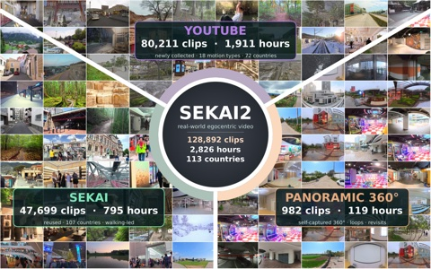
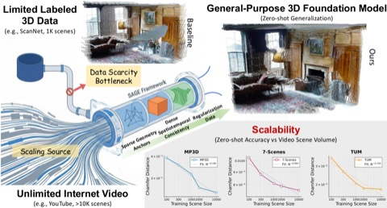
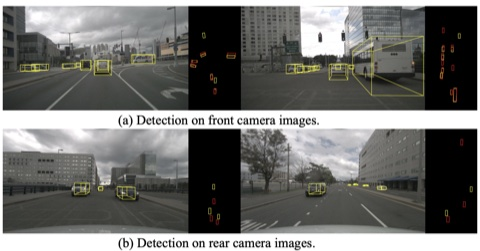
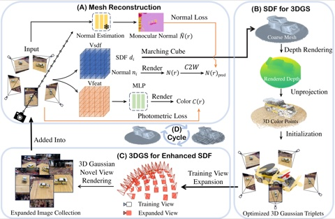
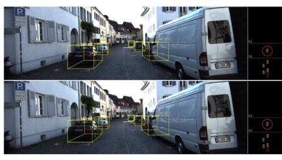
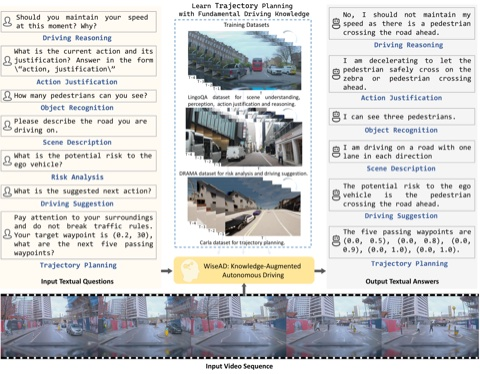

Research
I'm interested in 3D computer vision and perception. My research covers 3D reconstruction (surface reconstruction, Gaussian splatting, and 3D geometric foundation models), monocular 3D object detection for autonomous driving, and interactive video world models.
|
|

|
Sekai2: From World Exploration to Interactive World Modeling
Kang He,
Wenshuo Peng,
Zihui Gao,
Jiaming Tan,
Kaipeng Zhang,
Yongtao Ge
arXiv, 2026
arXiv
A large-scale egocentric video dataset pairing long videos with camera trajectories and temporally grounded captions, for training long-horizon, camera-controllable video world models.
|
|
|
AlayaWorld: Interactive Long-Horizon World Modeling — Full Technical Report
AlayaWorld Team:
Kaipeng Zhang, Chuanhao Li, Yifan Zhan, Yongtao Ge, Yuanyang Yin, Jiaming Tan, Kang He, Liaoyuan Fan, Mingliang Zhai, Ruicong Liu, Xiaojie Xu, Xuangeng Chu, Zhen Li, Zhengyuan Lin, Zhixiang Wang, Zian Meng,
Zihui Gao
arXiv, 2026
arXiv
The full technical report of AlayaWorld, a video world model that generates interactive, explorable, and continuously evolving virtual worlds from text, an image, or video.
|
|
RA-L 2026
|
RGB-D Video Generation for Improving Human-to-Robot Object Handover Prediction
Tianyu Sun,
Zhoujie Fu,
Zihui Gao,
Bang Zhang,
Guosheng Lin
IEEE Robotics and Automation Letters (RA-L), 2026
paper
Hand2Bot, an RGB-D video dataset with rich human context (body posture, facial expressions) collected for human-to-robot handover, plus RGB-D video generation to narrow the sim-to-real gap.
|
|

|
Scalable Adaptation of 3D Geometric Foundation Models via Weak Supervision from Internet Video
Zihui Gao,
Ke Liu,
Donny Y. Chen,
Duochao Shi,
Guosheng Lin,
Hao Chen,
Chunhua Shen
NeurIPS, 2026
arXiv
SAGE turns unlabeled Internet videos into training data for 3D geometric foundation models, combining sparse SfM anchors with dense consistency from 3D Gaussian rendering.
|
|

|
IPD3D: Camera-Agnostic Lightweight Monocular 3D Detection via Geometric Decoupling
Zihui Gao,
Xinhai Zhao,
Hao Chen
IJCNN, 2026
Monocular 3D detectors work best on images from the camera they were trained on. Decoupling the intrinsic parameters, by mapping images or features to an aligned focal length, lets one lightweight detector work across cameras.
|
|

|
SurfaceSplat: Connecting Surface Reconstruction and Gaussian Splatting
Zihui Gao,
Jia-Wang Bian,
Guosheng Lin,
Hao Chen,
Chunhua Shen
ICCV, 2025
paper
/
arXiv
/
code
For sparse-view inputs, an SDF supplies coarse geometry to improve 3DGS rendering, and images rendered by 3DGS in turn refine the SDF's fine surface detail.
|
|

|
Improving Monocular 3D Object Detection for Far-Field Scenarios
Zihui Gao,
Xinhai Zhao,
Hao Chen
ITSC, 2025
paper
Better instance-depth estimation for far-away objects (over 30m), which are small and rarely annotated, in monocular 3D detection.
|
|

|
WiseAD: Knowledge Augmented End-to-End Autonomous Driving with Vision-Language Model
Songyan Zhang,
Wenhui Huang,
Zihui Gao,
Hao Chen,
Chen Lv
arXiv, 2024
arXiv
Studies how driving knowledge in a vision-language model relates to closed-loop driving, and injects that knowledge into an end-to-end autonomous driving system.
|
|
DSP 2022
|
Detection Architecture with Improved Classification Capabilities for Covariance Structures
Jun Liu,
Zihui Gao,
Zhaoqian Sun,
Tao Jian,
Weijian Liu
Digital Signal Processing, 2022
paper
A radar adaptive detection architecture that first classifies the interference covariance structure and then picks the matching adaptive detector.
|
|